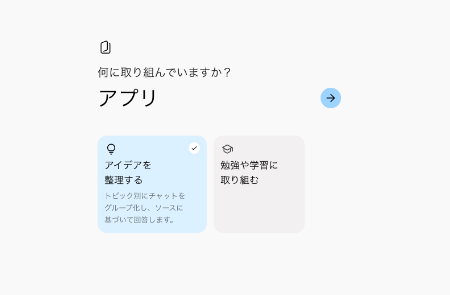

📘 基本の使い方：Notebookソース読み込み ／ プロンプトの使い分け
- 基本（Gemini Notebook 等を使う場合）：第1章〜第5章を1ファイルにまとめた専用テキストをソースとして読み込ませて使うのが基本です。設計思想や注意点・技術仕様をAIが把握した状態になるため、作りたいアプリの概要を伝えるだけで作成できます（出力後、「ガイドブックの仕様を満たしているか確認して」と点検させると抜け漏れを防げます）。
- 別のAIを使う場合・単発で使う場合：下の 5.1 プロンプト例（必須仕様込みのテンプレート）をコピーしてそのまま使用してください。
5.1
プロンプト例
以下のプロンプトをコピーし、【作成したいアプリの概要】を編集して使用してください。あくまで一例なので、自由に書き換えてください。
特別支援学校の児童生徒が使うためのWebアプリ（HTML5/JavaScript）を作成してください。
【作成したいアプリの概要】
（※分からなかったり指定がなかったりする項目は空欄のままで構いません。Gemini側で使いやすく補完してください）
・アプリ名：［例：たべものタッチゲーム］
・アプリのテーマ・目的：［例：画面を流れる果物をタッチして捕まえる］
・画面の見た目・配置：［例：上にスコア表示、中央に大きな描画エリア］
・児童生徒の操作：［例：画面上を動く絵文字を直接タップする］
・フィードバック・演出：［例：タップ成功で「パチン！」と音が鳴り、星のエフェクトが出る］
・その他こだわり：［例：失敗してもゲームオーバーにならず、ずっと遊べる］
【必須の技術・UI仕様】
1. **ファイル形式**:
- HTML、CSS、JavaScriptをすべて「1つのHTMLファイル」にまとめて出力してください。
2. **フォント指定**:
- Google Fontsから「Klee One」を読み込み、アプリ全体（テキスト、ボタン等）のフォントに設定してください。
3. **視覚要素（画像ファイル不可・絵文字 / HTML5 <canvas> 活用）**:
- 外部の画像ファイル（png, jpg等）は使用せず、視覚要素は「絵文字（Emoji）」、CSSグラフィック、またはHTML5の「<canvas> タグ」を使って描画・表現してください。
4. **音声処理（外部音声ファイル不可・Web Audio API活用）**:
- 外部の音声ファイル（mp3, wav等）は一切使用せず、効果音・BGMはすべてWeb Audio API（オシレーター等）を用いてJavaScriptコード内でシンセサイズして再生してください。
5. **iPad対応（PWA / 画面拡大・文字選択・システム誤作動・マルチタッチ誤動作の防止）**:
- 「ホーム画面に追加」して使えるよう、<head>内に以下のメタタグを含めてください。
• <meta name="viewport" content="width=device-width, initial-scale=1.0, user-scalable=no">
• <meta name="apple-mobile-web-app-capable" content="yes">
• <meta name="apple-mobile-web-app-status-bar-style" content="black-translucent">
- **【誤操作防止】** ダブルタップやピンチアウトによる画面拡大を防ぐため、CSS（`touch-action: manipulation;`）およびJavaScript（`gesturestart` イベントのキャンセル等）でズーム動作を完全に無効化してください。
- **【文字選択防止】** 画面の長押しで文字やボタンが青く選択されたり、コピー等のポップアップメニューが出たりしないよう、CSS（`user-select: none; -webkit-user-select: none; -webkit-touch-callout: none;`）をアプリ全体に適用してください。
- **【システム誤作動防止】** 画面下端からのスワイプ（ホーム復帰）や上端からのスワイプ（通知・コントロールセンター）の誤動作を防ぐため、画面の最上部および最下部には操作ボタンやドラッグ対象を配置せず、上下に適切な余白（マージン）を設けてください。
- **【オブジェクト残留・複製防止】** ドラッグ操作がある場合は `pointerId` 等で現在操作中の1本の指だけを排他管理し、ドラッグ中に別の指が元の位置や他の対象に触れてもオブジェクトの複製や処理の競合が起きないようにしてください。また、`pointercancel` 時も確実に元の状態へ戻し、問題終了・画面遷移・リセット時には生成したオブジェクトや一時要素を画面から漏れなく削除して残り続けないようにしてください。
6. **画面構成（スタート画面と設定ボタン）**:
- アプリ起動時はまず「アプリ名」と「大きなスタートボタン」がある【スタート画面】を表示してください。
- スタートボタンをタップするとWeb Audio APIのAudioContextを初期化・アンロック（準備）し、メインの操作画面に切り替わるようにしてください。
- 教員用の設定画面（モーダルまたは別画面）を開くための「設定ボタン（アイコン）」は、この【スタート画面】上に配置してください。
- 設定項目が多くなった場合でも確実にすべての項目を操作できるよう、設定画面内は上下スクロール（`overflow-y: auto;`）ができるようにしてください。
7. **誤操作防止（設定ボタンのトリプルタップ・干渉対策）**:
- 児童生徒の誤操作を防ぐため、設定ボタンは「アイコンをトリプルタップ（3回連続タップ）」した時のみ設定画面が開く仕様にしてください。
- **【重要】** 画面全体のダブルタップ防止処理と競合しないよう、設定ボタンには `pointerdown` イベントとタップの経過時間（例: 500ms以内に3回タップ）を用いた独立した連打判定ロジックを実装してください。
8. **設定データの永続保存（localStorageの使用）**:
- 設定画面で変更した内容（難易度や問題リスト等）は、ブラウザを閉じても保持されるよう `localStorage` に保存・読み込みできるようにしてください。
- 同一ドメイン内の他アプリとのデータ競合（上書き）を防ぐため、`localStorage` のキー名には必ず「このアプリ固有のプレフィックス（例: アプリ名_settings）」を付与してください。
9. **アクセシビリティ**:
- タップターゲットは大きく押しやすいデザインにし、タッチ操作に最適化してください。
10. **完全なコードの出力（最重要）**:
- 描画処理やJavaScriptも含め、コードを絶対に途中で省略（「// ここに処理を記述」など）せず、そのままCanvas上でプレビュー動作する完全なHTMLコードとして出力してください。
5.2
追加プロンプト例
用途に応じて以下のプロンプトを追加してください。
🏷️ オプション１：ホーム画面用アイコンを設定する
iPadのホーム画面にショートカットを追加した際のアイコン画像を指定します。
【指示プロンプト】
ホーム画面に追加したときに表示されるアプリアイコンを設定したいです。HTMLと同じフォルダにある icon.png を読み込むタグを <head> 内に追加してください。
注意点: HTMLファイルと同じフォルダ内に、正方形の画像ファイル（180×180ピクセル推奨）を
icon.png という名前で保存しておく必要があります。
🖼️ オプション２：端末内の画像を登録・保存する（IndexedDB）
写真やイラストをアップロードして教材に使い、ブラウザを閉じても消えないようにします。
【指示プロンプト】
教員向けの設定画面から、端末内の画像ファイル（png/jpg）をアップロードして登録・表示できるようにしてください。 容量制限によるエラーを防ぐため、画像の保存には localStorage ではなく IndexedDB を使用してください。 また、不要になったデータを完全に消去できるよう、設定画面内に「登録画像とデータをすべて初期化する」完全削除ボタンを設置してください。
個人情報に関する注意: 児童生徒の顔写真や個別情報を登録した端末を共用あるいは別の児童生徒用に変更する場合は、「初期化ボタン」でデータを削除するか、特定の個人が識別できない画像（イラストやフリー素材等）を使用してください。
📦 オプション３：データを書き出し・読み込みして他のiPadと共有する
１台の端末で作成した単語リストや画像データをファイルとして出力し、別のiPadに一括で取り込みます。
【指示プロンプト】
別のiPadでも同じ教材データを使えるようにしたいです。 設定画面に以下の2つのボタンを追加してください。
「データを書き出す」ボタン：登録した画像や設定内容を1つのJSONファイル（画像はBase64形式）として端末にダウンロード保存する処理。
「データを読み込む」ボタン：書き出したJSONファイルを選択してアップロードすると、現在のIndexedDBにデータを取り込んで即座に反映する処理。
運用のメリット: AirDrop等でJSONファイルを他のiPadに送り、別のiPadで読み込むだけで、全端末に同じ教材環境を配付できます。端末のブラウザキャッシュが消えた際のバックアップとしても機能します。
5.3
プロンプト解説
マスタープロンプトに含まれる各指示の背景にある、教育的配慮や技術的な理由を解説します。
| プロンプトの記述（項目・指示内容） | 解説（なぜこの指示を入れるのか） |
|---|---|
| 【作成したいアプリの概要】 （アプリ名、テーマ、画面配置、操作、フィードバック等） |
◯ AIに教材の核となるアイデアを伝える部分 ここを書き換えます。未定の項目は空欄でもAIが適当な値を補ってくれます。可能な限り具体的に記入したほうが、イメージに近い結果を得やすいです。なお、画面配置については、イメージ画像をプロンプトに貼り付けることも効果的です。 |
| 1. ファイル形式 HTML、CSS、JSを1つのHTMLファイルにまとめる |
◯ Canvas対応とファイル管理のトラブルを減らすため 通常はこれらのファイルを別々に保存して連携させますが、使用する「Geminiの作業画面（Canvas機能）」でその場ですぐに動作確認（プレビュー）を行うには、1つのHTMLファイルにまとまっている必要があります。また、どのファイルを書き換えるか迷わないようにします。ただし、コードが長くなりすぎた場合、一つのファイルに収まらなかったり、無理に一つのファイルに収めようとして機能が削られたりすることもあります。その場合は、複数ファイルに分けることを検討してください。 |
| 2. フォント指定 Google Fontsの「Klee One」を適用 |
◯ 読みやすさと教育的配慮のため 教科書体に近いフリーのフォントを指定しています。文字の形を捉えやすく、特別な準備なしで全端末で同じ見た目になります。 |
| 3. 視覚要素（画像ファイル不可） 絵文字、CSS、Canvasで描画する |
◯ 著作権保護、画像準備の手間とリンク切れを防ぐため 勝手に外部の画像を使用して著作権を侵害することを防ぎます。また、外部画像を指定すると、画像の保存やパス設定が必要になります。OS標準の「絵文字」やコード描画に限定することで、追加素材なしですぐに視覚的な教材が作れます。なお、OSによって絵文字は異なるので注意が必要です。 |
| 4. 音声処理（外部音声ファイル不可） Web Audio APIでコード内で音を合成する |
◯ 著作権保護、音声ファイルの用意を不要にするため 勝手に外部の音源を使用して著作権を侵害することを防ぎます。mp3ファイル等を用意させると作業手順が複雑になります。ブラウザの機能（電子音の計算合成）で「ピピッ」「パチン」といった効果音をコード単体で鳴らします。 |
| 5. iPad対応（誤操作・拡大・バグ防止） viewport設定、拡大・文字選択禁止、残留・複製防止 |
◯ 授業中の「動かなくなった・変になる」トラブルを防ぐため 児童生徒が画面を連打したときに画面が勝手にズームしたり、長押しで青い選択枠や「コピー」メニューが出たりするiPad特有の誤動作を完全に封じます。また、画面端からドラッグして意図せずアプリを切り替えたりコントロールセンター等が出たりするのを防ぎます。さらに、両手・複数指でドラッグ対象を触った際の複製・画面残留バグや、問題終了後の消し忘れも予防します。 |
| 6. 画面構成（スタート画面） スタート画面の設置と音声アンロック、設定画面のスクロール許可 |
◯ iPadで確実に音を鳴らし、設定操作を担保するため iPad（iOS Safari）の安全仕様上、ユーザーが画面を一度タップしないと音声再生が許可されません。スタートボタンを踏ませることで、確実に音が出る状態を作ります。また、全体でスクロールを禁止していても設定画面内はスクロール可能にしておくことで、設定項目が増えても操作不能になるトラブルを防ぎます。 |
| 7. 誤操作防止（設定ボタン） トリプルタップ（3回連続）で設定を開く |
◯ 児童生徒が設定を変えてしまうのを防ぐため 1回タップやダブルタップだと誤って設定が開きます。3回連続タップという教員のみが知る操作にすることで、授業の進行を妨げません。 |
| 8. 設定データの永続保存 localStorageと固有プレフィックスの使用 |
◯ 端末の電源を切っても設定を残すため 難易度や出題設定をブラウザ内に記憶させます。また、プレフィックス（識別名）を付けることで、同じドメイン内で別のアプリを作ったときにデータが混ざって上書きされる事故を防ぎます。 |
| 9. アクセシビリティ タップターゲットを大きくする |
◯ 運動面の操作性に配慮するため 指先の細かいコントロールが苦手な児童生徒でも、押し間違えずに意図した操作ができるようにボタンサイズを強制的に確保させます。 |
| 10. 完全なコードの出力 コードを途中で省略させない |
◯ コピー＆ペーストだけで完成させるため AIはコードが長くなると「// ここにロジックを追記」と処理を省略することがあります。この記述をしていてもコードを省略する場合があるので、その場合は「フルコードを出力」と指示してください。 |
5.4
Gemini Notebookを使った作り方（画面手順）
基本となる「ガイドブックの統合テキスト（.txt）を読み込ませてアプリを作る手順」です。番号ボタンまたは「前へ／次へ」でステップを切り替えながら確認できます（画像はクリックで拡大できます）。
STEP 1 / 6
ノートブックを新規作成する
Gemini 左メニューの「ノートブックを新規作成」をクリックし、名前（例：「アプリ」）を入力します。「アイデアを整理する」が選ばれている状態で青い矢印（→）を押して作成します。

🔍 クリックで拡大https://watanabe-apps.github.io/apps/guide_book/guidebook_notebook.txt